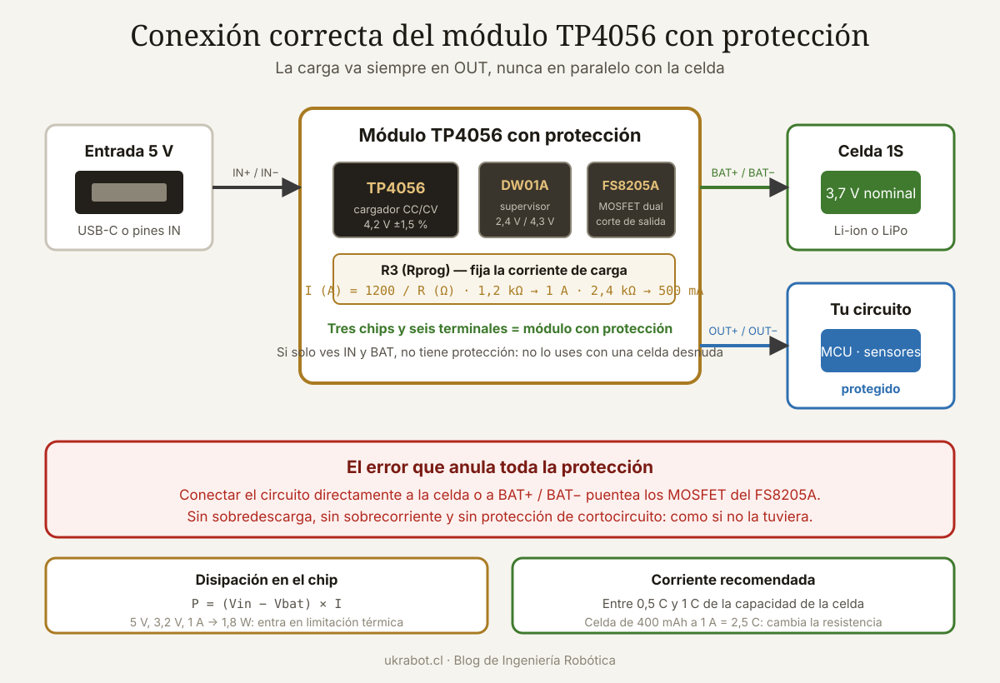

Qué cubre esta guía
Qué es y cómo funciona el TP4056
El TP4056 es un circuito integrado cargador lineal para una sola celda de litio, con tensión de flotación fija de 4,2 V y corriente de carga ajustable por resistencia externa. Se popularizó en módulos que cuestan céntimos y que hoy están dentro de miles de proyectos.
Algoritmo de carga CC/CV que implementa:
1. Precarga (trickle)
Si Vbat < 2,9 V → carga al 13 % de la corriente programada
Recupera celdas descargadas sin estresarlas
2. Corriente constante (CC)
Vbat entre 2,9 V y 4,2 V → corriente fija programada
Es la fase más larga; la tensión sube progresivamente
3. Tensión constante (CV)
Vbat = 4,2 V → la tensión se mantiene, la corriente decae
4. Fin de carga
Cuando la corriente cae al 10 % de la programada
El LED cambia de rojo a azul y el consumo cesa
5. Recarga automática
Si la tensión cae por debajo de ~4,05 V, reinicia el ciclo| Parámetro | Valor |
|---|---|
| Tensión de entrada | 4,0 a 8,0 V (típico 5 V por USB) |
| Tensión de flotación | 4,2 V ±1,5 % |
| Corriente de carga | 130 mA a 1000 mA, ajustable |
| Umbral de fin de carga | 10 % de la corriente programada |
| Umbral de recarga | ≈ 4,05 V |
| Encapsulado | SOP-8 con almohadilla térmica |
| Limitación térmica | Reduce corriente al superar ~145 °C de unión |
La diferencia que importa: con o sin protección
| Aspecto | Módulo sin protección | Módulo con protección |
|---|---|---|
| Chips en la placa | Solo TP4056 | TP4056 + DW01A + FS8205A |
| Terminales | IN+, IN−, BAT+, BAT− | IN+, IN−, BAT+, BAT−, OUT+, OUT− |
| Protección de sobredescarga | Ninguna | Corta a ~2,4 V |
| Protección de sobrecarga | Solo la del TP4056 | Doble: TP4056 + DW01A a 4,3 V |
| Protección de sobrecorriente | Ninguna | Corta a ~3 A |
| Protección de cortocircuito | Ninguna | Sí, corte inmediato |
| Diferencia de precio | Céntimos | Céntimos |
Cómo identificarlos de un vistazo
- Cuenta los chips: el módulo con protección tiene tres circuitos integrados. El TP4056 grande, el DW01A pequeño de 6 patas, y el FS8205A que es un MOSFET dual, también de 6 patas o similar.
- Cuenta los pares de terminales: si solo hay entrada y batería, no tiene protección. La presencia de OUT+ y OUT− es la señal inequívoca de que sí la tiene.
- Serigrafía: muchos módulos con protección la indican explícitamente en la placa.
Ajustar la corriente de carga
La corriente la fija la resistencia conectada al pin PROG, marcada normalmente como R3 o Rprog en la placa. Los módulos comerciales vienen casi siempre con 1,2 kΩ, que corresponde a 1 A.
Fórmula del fabricante:
I_carga (A) = 1200 / R_prog (Ω)
Equivalente: R_prog (Ω) = 1200 / I_carga (A)| Resistencia | Código SMD | Corriente de carga | Capacidad de celda adecuada (a 0,5 C) |
|---|---|---|---|
| 10 kΩ | 103 | 130 mA | 260 mAh o más |
| 5,1 kΩ | 512 | 240 mA | 480 mAh o más |
| 4,0 kΩ | 402 | 300 mA | 600 mAh o más |
| 3,0 kΩ | 302 | 400 mA | 800 mAh o más |
| 2,4 kΩ | 242 | 500 mA | 1000 mAh o más |
| 2,0 kΩ | 202 | 600 mA | 1200 mAh o más |
| 1,5 kΩ | 152 | 780 mA | 1560 mAh o más |
| 1,2 kΩ | 122 | 1000 mA | 2000 mAh o más |
Qué corriente elegir
La regla general para celdas de litio de consumo es cargar entre 0,5 C y 1 C, donde C es la capacidad nominal. Una celda de 1000 mAh admite entre 500 mA y 1 A.
- Carga a 0,5 C o menos: más lenta pero notablemente mejor para la vida útil de la celda. Es la opción sensata si el dispositivo carga durante la noche.
- Carga a 1 C: aceptable en celdas de calidad que lo especifiquen, pero genera más calor tanto en la celda como en el módulo.
- Celdas pequeñas: una LiPo de 400 mAh cargada a 1 A recibe 2,5 C. Eso la degrada rápidamente y puede hincharla. Cambia la resistencia siempre que la celda sea pequeña.
Cambio de la resistencia en un módulo comercial:
1. Localizar R3 (encapsulado 0805, junto al TP4056)
2. Retirarla con aire caliente o con dos soldadores
3. Soldar la nueva del valor calculado
4. Verificar midiendo la corriente en serie con la batería
durante la fase de corriente constante
Alternativa sin desoldar, si solo quieres BAJAR la corriente:
no es posible añadiendo una resistencia en paralelo,
porque el paralelo siempre reduce la resistencia
y por tanto AUMENTA la corriente. Hay que sustituirla.Conexión correcta del circuito
El error más común de todos
Conexión correcta (módulo con protección):
Fuente 5 V ──────┬── IN+ ┐
(USB o pines) └── IN− ┘ módulo TP4056
BAT+ ──── + celda de litio
BAT− ──── − celda de litio
OUT+ ──── + de tu circuito
OUT− ──── − de tu circuito
El camino de la corriente hacia la carga pasa
por los MOSFET del FS8205A, que es lo que
permite a la protección cortar cuando hace falta.Alimentar el circuito mientras carga
Es perfectamente posible y es el modo normal de funcionamiento de cualquier dispositivo portátil. Pero conviene entender qué ocurre:
Con la carga conectada a OUT durante la carga:
Corriente que entrega el módulo = carga a la batería + consumo del circuito
Problema: el TP4056 no distingue entre ambas. Si el circuito
consume corriente de forma variable, el detector de fin de
carga puede confundirse y no terminar nunca el ciclo, o
terminarlo antes de tiempo.
Consecuencia práctica: para cargas de consumo alto o muy
variable, es preferible un circuito con "power path" real,
que separa la alimentación del sistema de la carga de la
batería. El TP4056 no lo implementa.Añadir un elevador para 5 V
Una celda de litio entrega entre 3,0 y 4,2 V. Si tu circuito necesita 5 V, hace falta un convertidor elevador después de la salida del módulo:
Celda 3,7 V → TP4056 (OUT) → elevador a 5 V → circuito
Consideraciones:
· El elevador consume corriente en vacío (10 a 500 µA según modelo)
· La eficiencia típica es de 80 a 92 %
· Verifica que el elevador arranque con la batería a 3,0 V
· Un MT3608 o un módulo con SX1308 son opciones habituales
Alternativa integrada: el IP5306 combina cargador, protección
y elevador a 5 V en un solo chip, con indicación de nivel.
Es lo que llevan dentro la mayoría de las baterías externas.Calor: el límite real del módulo
El TP4056 es un regulador lineal, y eso determina cuánto puede cargar realmente.
Potencia disipada en el chip:
P = (V_entrada − V_batería) × I_carga
Escenarios:
5,0 V entrada, 3,2 V batería, 1,0 A → 1,80 W ← el peor caso
5,0 V entrada, 3,7 V batería, 1,0 A → 1,30 W
5,0 V entrada, 4,1 V batería, 1,0 A → 0,90 W
5,0 V entrada, 3,7 V batería, 0,5 A → 0,65 W
5,0 V entrada, 3,7 V batería, 0,3 A → 0,39 WUn encapsulado SOP-8 con su almohadilla térmica soldada a una zona de cobre razonable disipa alrededor de 1 W antes de alcanzar temperaturas incómodas. Con 1,8 W, el chip entra en limitación térmica: reduce automáticamente la corriente para no destruirse.
Cómo mejorar la disipación
- Suelda la almohadilla térmica correctamente. Muchos módulos baratos tienen soldadura deficiente en esa zona, lo que empeora mucho la disipación.
- Añade cobre: si diseñas tu propia placa, un plano de masa amplio bajo el chip con varias vías térmicas duplica la capacidad de disipación.
- Baja la corriente: la solución más simple y casi siempre la correcta. Cargar a 500 mA en lugar de 1 A reduce el calor a la mitad y es mejor para la celda.
- Reduce la tensión de entrada: alimentar desde 4,5 V en lugar de 5 V baja la disipación, aunque hay que respetar el mínimo de 4,0 V.
- Ventilación: no encierres el módulo en una caja hermética junto a la batería sin ninguna vía de evacuación de calor.
Errores frecuentes y cómo evitarlos
| Error | Consecuencia | Solución |
|---|---|---|
| Conectar la carga a BAT en lugar de OUT | Se anula toda la protección | Usar siempre OUT+ y OUT− |
| Usar el módulo sin protección con celda desnuda | Sobredescarga; celda arruinada o peligrosa | Comprar la versión con protección |
| Cargar a 1 A una celda de 300 mAh | Degradación acelerada, hinchazón | Cambiar la resistencia de programación |
| Conectar dos celdas en serie | El TP4056 solo carga una celda | Usar un cargador 2S con balanceo |
| Conectar celdas en paralelo sin igualar | Corriente enorme entre celdas | Igualar tensiones antes de unir |
| Alimentar con más de 8 V | Destrucción del chip | Respetar el rango de entrada |
| Invertir la polaridad de la batería | Destrucción del módulo, riesgo térmico | Verificar con multímetro antes de conectar |
| Dejar el LED como único indicador | Diagnóstico ciego | Medir tensión y corriente con multímetro |
El problema de las celdas en paralelo
Es tentador poner dos celdas en paralelo para duplicar la capacidad manteniendo 3,7 V. Funciona, pero con condiciones estrictas:
Antes de unir celdas en paralelo:
1. Deben ser del mismo modelo, capacidad y estado de salud
2. Sus tensiones deben diferir en MENOS de 0,05 V
3. Si difieren más, cargar cada una por separado hasta igualarlas
Por qué importa:
Dos celdas con 0,3 V de diferencia y 30 mΩ de resistencia
interna cada una producen una corriente de igualación de:
I = 0,3 / (0,03 + 0,03) = 5 A
Cinco amperios circulando de una celda a otra en el instante
de la conexión, sin ninguna limitación. Es suficiente para
dañar ambas celdas y fundir el cable.Detectar módulos de mala calidad
- Mide la tensión de flotación al final de la carga. Debe estar entre 4,15 y 4,25 V. Un módulo que termine en 4,3 V está sobrecargando la celda y debe descartarse.
- Verifica la corriente real con un multímetro en serie durante la fase de corriente constante. Desviaciones de más del 20 % respecto de lo programado indican componentes fuera de tolerancia.
- Comprueba que la protección actúa: descarga la celda a través de una resistencia y verifica que el módulo corta la salida en torno a 2,4 V.
- Inspecciona la soldadura de la almohadilla térmica y de los conectores. Las placas baratas suelen tener defectos visibles con lupa.
Cuándo el TP4056 no es la respuesta
| Circuito integrado | Tipo | Ventaja frente al TP4056 | Cuándo elegirlo |
|---|---|---|---|
| TP4056 | Lineal 1S | Barato y sencillo | Carga hasta 1 A con disipación aceptable |
| MCP73831 | Lineal 1S | Encapsulado diminuto, muy fiable | Placas propias con poco espacio |
| IP5306 | Integrado 1S | Cargador + elevador 5 V + indicación | Baterías externas y proyectos alimentados a 5 V |
| BQ24074 | Lineal con power path | Separa alimentación del sistema y carga | Dispositivos que funcionan mientras cargan |
| BQ25896 | Conmutado 1S | Alta eficiencia, hasta 3 A sin calentarse | Carga rápida de celdas grandes |
| CN3791 | Conmutado con MPPT | Seguimiento de máxima potencia solar | Carga desde panel fotovoltaico |
| BMS 2S/3S/4S | Multicelda | Balanceo entre celdas | Cualquier pack de más de una celda |
Situaciones concretas
- Más de una celda en serie: el TP4056 no sirve en absoluto. Necesitas un cargador de la tensión correspondiente y un BMS con balanceo. El artículo sobre baterías Li-ion 21700 desarrolla la construcción de packs multicelda.
- Carga desde panel solar: un cargador lineal desperdicia la mayor parte de la energía del panel. El CN3791 con MPPT extrae bastante más.
- Corriente superior a 1 A: la disipación lineal lo hace inviable. Se necesita un cargador conmutado.
- Química LiFePO4: el TP4056 carga a 4,2 V, y una celda LiFePO4 se carga a 3,6 V. Usarlo la dañaría gravemente. Existen variantes específicas como el TP5000 configurable. Las diferencias entre químicas se tratan en la guía sobre celdas LiFePO4 grado A y grado B.
Conclusión
El TP4056 hace bien lo que promete: cargar una celda de litio con el algoritmo correcto por un precio ridículo. Para un proyecto alimentado con una celda de 1000 a 2500 mAh, con corrientes de carga moderadas, es una elección perfectamente sensata y no hay razón para complicarse.
Las tres reglas que resumen todo lo anterior: compra siempre la versión con protección, la que tiene tres chips y terminales OUT; conecta la carga a OUT+ y OUT−, nunca en paralelo con la batería, porque hacerlo anula la protección que acabas de pagar; y ajusta la resistencia de programación a la capacidad real de tu celda en lugar de dejar el 1 A de fábrica.
Y conoce sus límites: una sola celda, hasta 1 A en la práctica por disipación térmica, química de 4,2 V exclusivamente y sin separación entre alimentación del sistema y carga de la batería. Fuera de ese perímetro hay circuitos mejores, y usar el TP4056 donde no corresponde es la vía más rápida a una celda hinchada.
Preguntas frecuentes
¿Cómo sé si mi módulo TP4056 tiene protección?
Cuenta los circuitos integrados y los terminales. El módulo con protección lleva tres chips: el TP4056, el DW01A de seis patas y el FS8205A que contiene los MOSFET. Además tiene seis terminales en lugar de cuatro: entrada, batería y salida. La presencia de terminales marcados como OUT+ y OUT− es la señal inequívoca. Si solo ves IN y BAT, el módulo carece de protección y no debe usarse con una celda desnuda.
¿Puedo cargar dos baterías con un solo TP4056?
En paralelo sí, siempre que sean del mismo modelo y capacidad y que sus tensiones se hayan igualado antes de unirlas, con una diferencia inferior a 0,05 voltios. La corriente de carga se reparte entre ambas, por lo que el tiempo se duplica salvo que aumentes la corriente programada. En serie no es posible en absoluto: el TP4056 está diseñado exclusivamente para una celda a 4,2 voltios y conectarlo a dos celdas en serie no las cargará y puede dañar el circuito.
¿Por qué mi módulo se calienta tanto durante la carga?
Porque es un cargador lineal y disipa como calor toda la diferencia entre la tensión de entrada y la de la batería multiplicada por la corriente. Con 5 voltios de entrada, una batería a 3,2 voltios y 1 amperio de carga se disipan 1,8 vatios en un encapsulado muy pequeño. El chip entra entonces en limitación térmica y reduce la corriente automáticamente, lo cual es una protección normal y no un fallo. Si te molesta, reduce la corriente cambiando la resistencia de programación o mejora la disipación de la placa.
¿Puedo usar el TP4056 para cargar baterías LiFePO4?
No sin modificarlo. El TP4056 tiene la tensión de flotación fija en 4,2 voltios, mientras que una celda LiFePO4 se carga a 3,6 voltios y su tensión máxima absoluta es de aproximadamente 3,65 voltios. Cargarla a 4,2 voltios la sobrecarga gravemente, degrada su capacidad de forma permanente y puede provocar hinchazón o venteo. Para esta química debes usar un cargador específico como el TP5000, que permite seleccionar entre 4,2 y 3,6 voltios.
¿Puedo dejar la batería conectada permanentemente al módulo?
Sí, y de hecho es el modo normal de funcionamiento en un dispositivo portátil. El TP4056 deja de cargar al alcanzar los 4,2 voltios y reinicia el ciclo solo cuando la tensión cae por debajo de unos 4,05 voltios, lo que evita el llamado goteo continuo que degrada las celdas de litio. Lo que no debes hacer es dejar el módulo permanentemente alimentado por USB en un dispositivo que no usas durante meses: mantener una celda de litio al cien por cien de carga de forma prolongada acelera su envejecimiento.
¿Qué corriente de carga debo programar para mi batería?
Entre 0,5 y 1 veces la capacidad nominal expresada en amperios, prefiriendo el extremo bajo del rango. Para una celda de 1000 miliamperios hora, entre 500 miliamperios y 1 amperio, siendo 500 miliamperios la opción que prolonga más la vida útil. Los módulos comerciales vienen configurados a 1 amperio con una resistencia de 1,2 kiloohmios, lo cual es excesivo para celdas pequeñas: una LiPo de 400 miliamperios hora cargada a 1 amperio recibe 2,5 veces su capacidad por hora, lo que la degrada rápidamente.
Este artículo es contenido editorial independiente: no contiene ubicaciones patrocinadas ni enlaces de afiliado. Si en futuras actualizaciones se agregan enlaces a proveedores de componentes, serán identificados explícitamente. El código y las conexiones son referenciales y deben adaptarse y probarse con tu propio hardware. Si detectas un error en esta guía, por favor avísanos.
Sigue aprendiendo
Amplía el tema con la guía de baterías Li-ion 21700 para packs de alta corriente y con la comparación de celdas LiFePO4 grado A frente a grado B.
Fuentes primarias y lecturas recomendadas
Hojas de datos de los circuitos integrados implicados y referencias sobre carga segura de celdas de litio.
- NanJing Top Power — Hoja de datos del TP4056
- Fortune Semiconductor — Hoja de datos del protector DW01A
- Microchip — Hoja de datos del cargador MCP73831
- Texas Instruments — Cargador con power path BQ24074
- Battery University — Cómo cargar baterías de ion litio
- IEC 62133 — Requisitos de seguridad para celdas y baterías secundarias
Enlaces revisados: 15 de agosto de 2026.